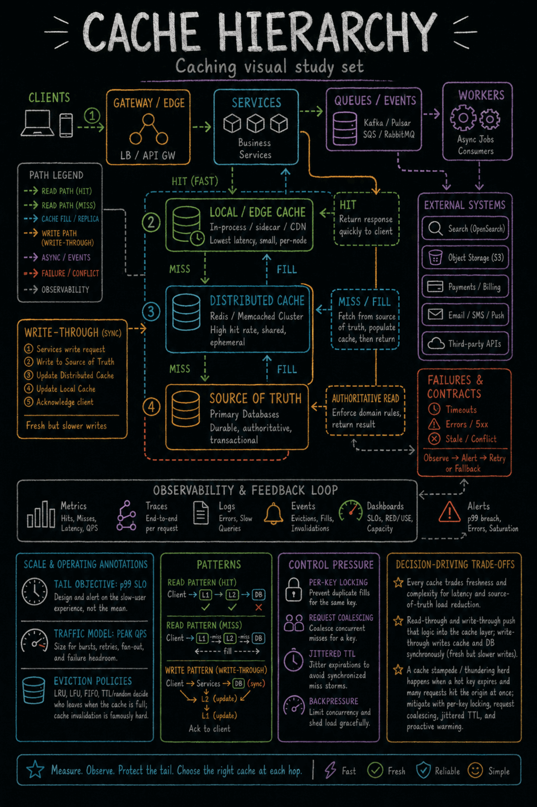

https://frosty110.github.io/js-drill/assets/system-design/infographics/components/c02/cache-hierarchy.pngWhere to put a cache, how reads and writes flow through it (cache-aside, read-through, write-through, write-back, write-around), how entries are evicted and invalidated, and how to survive the stampede when a hot key expires.